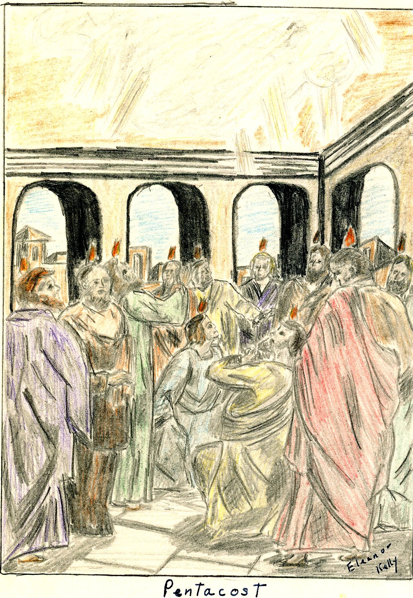
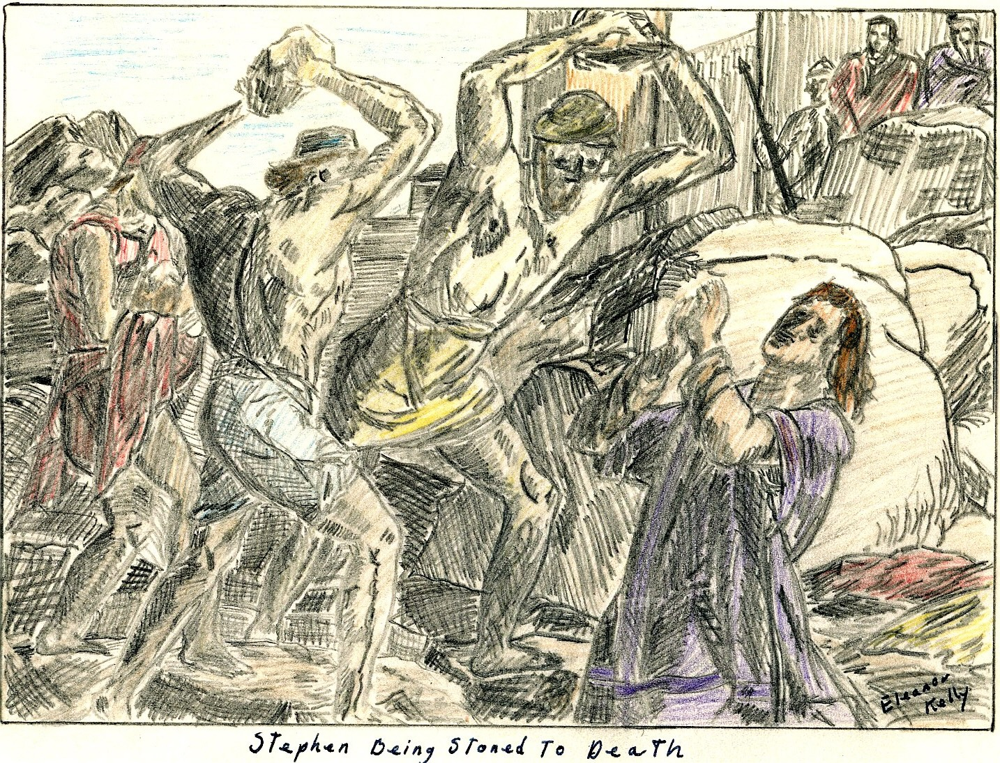
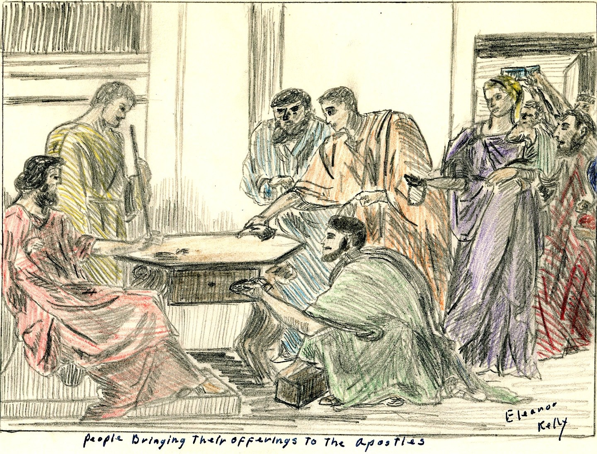

THE PRIMITIVE CHRISTIAN CHURCH
by Eleanor Kelly, April 1960
Highland High School, Senior Year English Class
OUTLINE
I. INTRODUCTION
II. CONVERSION & MEMBERSHIPS
A. PERSECUTIONS
B. REASONS FOR VICTORY
C. REQUIREMENTS FOR MEMBERSHIP
III. THE CHURCH & SOCIETY
IV. ORGANIZATION & OFFICERY
V. DAYS & CERIMONIES OF WORSHIP
VI. CONCLUSION
INTRODUCTION
The Apostolic Church[i] was considered to be the period of the first century A.D. from Pentecost (about May 17, 29 A.D.) to approximately 100A.D. when all the apostles were dead. During the last quarter of the century, however, only one apostle was alive, this was John, the beloved who is believed to have died of natural causes somewhere between A.D. 98-117.
The importance of this first primitive church and its influence on our civilization today cannot be estimated, but the influence on the world in that period can. Society rose to a much higher standard, slaves were freed, slums were cleared up, and people generally cared more about how they lived both morally and in their physical environment.
CONVERSION & MEMBERSHIPS
Any new idea takes time and suffering to put across, and Christianity was no exception. Before the end of the Apostolic era, the Christians had gone under two large persecutions and innumerable smaller ones. Besides this, the early missionaries had many mythical gods and goddesses to contend with while preaching in Greek and Roman cities.
Although the first few years saw little organization and no set forms of worship, the church, before 100 years were up had conquered the than known world almost completely.
The loyalty and devotion of these first followers to Christ, and the zeal with which they proclaimed the Gospel, brought about the most widespread movement ever seen in the history of the world. Their story is one of adventure, love, loyalty and devotion to the living Christ.
Pentecost[ii] the celebrated beginning of the church was actually not the birthday of the church but marked the epoch in proclamation of the Gospel in the disciples conviction
of Christs presence and the increase of adherents to the new faith, for as it says in Acts 2:41 that on the day of Pentecost about 3000 believers in Christianity were baptized and later in the same day in the Synagogue about 2000 more were added![iii]

Pentacost
The Jerusalem congregation was filled with messianic hope and although cruder and less spiritual than Jesus had taught, they were devoted in loyalty to Christ, who, they believed, would return but whom heaven must receive till the restoration of all things. While they waited the Lord's coming they provided for the needy and had all things in common.[iv]
The Jerusalem church, and associated Palestinian communities did not influence Christianity as a whole by permanent leadership development but was an important fountain from which Christianity first flowed and was also important in securing preservation of many memorials and words of Jesus life that otherwise would have been lost.
At the time of the first missionary endeavors people were becoming unsatisfied with their religions, especially the educated and a strong desire of atonement for mistakes a
and unquenchable desire to look beyond the grave rose up.
To meet these longings, religions known as the mysteries were invented. These religions were partly nature worship and tried to link the worshiper to nature through reference to the seasons. These mystery religions also made appeal to the love of sacred ritual and spoke to the demand of certain items of religion.
The Mithra cult which was the most popular or the mystery religions, taught high morality and laid emphasis on courage, honesty, and chastity. This appealed mostly to soldiers. In the end the Mithra cult gave the most opposition to Christianity.
Large numbers of people were adherents to the mysterious religions because no-one was required to change his life as a result of their initiation.
Although the mystery religions gave the most opposition there were others which also presented stumbling blocks for Christianity.
The Stoic Philosophy was one of these held in the first century. Their philosophy was a pantheism which ran into atheism. They believed that the whole world was God and that He was not personal which is exactly opposite of the Christian belief.
Another religion which gave opposition to the Christian missionaries was what was called Gnosticism. Thes used resources of the then so-called science to make a religion acceptable to the highly educated.
Judaism presented the hardest of the early opposition to overcome. Although the first Jewish Christians kept in obedience to Jewish law, the fact that the Jewish Christians held
their own special services among themselves, with prayers, mutual exhortation, and breaking bread in private houses caused the Jewish Pharisees and Sadducees to bring trouble from the Sanhedrin[v] to the Christians.
These religions, and possibly a few other minor religions presented the only opposition in this line.
The assumption of human wickedness and human impotency in the face of personal and social evil provided a good reason why Grecian intellectuals and Roman nobles found it difficult to accept the claim of the Apostolic church.
The first violent uprising against the Christians on record where someone was killed, was the spring following Christes crucifixion. This first martyr was Stephen, a young Greek,
and was martyred because of the faithful way he preached the gospel to the betrayers and murderers of Christ. The crowd (mostly pharisees from the temple) was exited to such a degree of madness that they cast him out of Jerusalem and stoned him to death.[vi]
As a result of Stephens stoning, a persecution was raised against about 2000 Christians in Jerusalem. This caused almost all the Christians, with the exception of the apostles, to be
scattered abroad throughout all Judea and Samaria where they went about preaching.[vii]

Stephen Being Stoned To Death
PERSECUTIONS
In A.D. 51-52 under Claudius[viii] tumults among the Jews consequent upon Christian teaching brought governmental attention from Rome itself; but this was short lived and nothing was done to harm the Christians.
In A.D. 64, a great fire in Rome, which destroyed a large part of that city, brought what was called the Neronian persecution. Nero[ix] to turn the blame for the fire from himself persecuted the Christians. This was not a persecution against Christianity as an unlawful religion and was confined to Rome and the vicinity thereof. People continued to think that the
fire was caused by Nero's command, so Nero caused Christians to be seized, convicted, insulted, and killed by mangling of dogs or on crosses burned as light by night. From this persecution came sympathy toward the Christians as being destroyed not for public good but to satisfy the cruelty of one individual.
From A.D. 81-96, under the Roman emperor Domitian[x] there was another persecution with charges of atheism. Superstition due to his than misunderstanding of Christian faith and worship caused Flavius Clemens[xi] and many other Christians to be exiled to the island of Pontea in consequence of their testimony to Christ.
REASONS FOR VICTORY
In spite of all opposition and persecution the church lived on and was victorious. The reasons for this are not hard to understand when its message and what it offered to men individually is considered.
First the church was one institution that showed hospitality and rendered aid to its members. There was no other institution at this time that did this.[xii]
Other than this there were many other leading causes for its victory some of these are: external aid to missionary work, the world at that time was united almost completely under the Roman empire, everyone spoke a common tongue, which was Greek, there were paved roads leading everywhere, piracy and brigandage were suppressed so travel was reasonably safe, the old testament was found in every country along with the hope of the coming Messiah, and Christianity offered something socially to the world.
Out of pessimism about men now and optimism about men as they might become by Gods power in Christ Jesus, the church won the victory over the world.
REQUIRMENTS FOR MEMBERSHIP
In Romans 10: 8-15 it states that the divine plan of conversion applied equally to both Jews and gentiles. The steps are as follows.
The first step according to Paul was preaching. This preaching was primarily factual rather than theological and recited what happened historically in the life, death, and resurrection of
Jesus.
The second step was believing or faith. This involved the acceptance of the fact proclaimed rather than the acceptance of explanations in theological or philosophical terms of what lay behind facts, faith, or believing. The essential fact believed was that of Christs resurrection.
The third step was obedience and was linked with faith. Three steps followed under obedience.
The fourth step, which was the first step of obedience was repentance. Salvation was viewed as obtained by repentance and included the sorrow of rejecting Jesus as the Messiah as well as for personal sins and was required of both Jews and gentiles.[xiii] Repentance was a positive virtue demonstrating the converts turning from evil to God by doing good, sharing with the needy, honesty in business, and quiet and faithful performance of duty.[xiv]
The fifth step followed quite naturally, it was confession of faith, this was also the second step of obedience. This confession of faith, was in public before many witnesses and was linked with faith as an essential part of conversion. The words used for confession are not known and there may have been several different statements varying with the church’s location.
The sixth step, and third under obedience was baptism and was loyally followed after the confession of faith as a sign of cleansing. It was a token of a new life relationship and sealed
with divine approval by the bestowment of spiritual gifts in the form of the Holy Spirit.

Two Apostolic Missionaries
THE CHURCH AND SOCIETY
Christianity was not recognized on the categories of religions because it had no nation but drew its converts from all nations. Therefore, it was considered no religion but rather inter-
nationalism which aroused the instinctive enmity of the Roman empire who claimed for itself the only international rule. This meant that Christianity was not on the best terms with Rome but was considered an enemy.
This presented one of the major social problems that early Christianity faced, that was its relation to the state. Christians, however, were unconcerned with earthly politics or what the government might do to them because they believed their citizenship was in heaven.
Christianity’s primary concern was to do something really beneficial to the people. Their first concern was not financial or of material values but ever of human values.
Christianity believed that the ultimate remedy for all social wrongs was to change men, but it also believed that if an attempt was made to force social remedies on men before they were spiritually ready to carry through with them two disastrous results would inevitably follow. These are the man himself will be lost and there would be no radical cure of the social evil.
The Christians believed in the gospel of Christ's power to change men’s lives, and that it moved consequently toward a permanent solution of the problem of social evils.
The church faced many large social evils that needed correcting. One of the largest problems that the church faced was that which dealt with family life.
The killing of unwanted infants was widespread over the ancient world. Sometimes exposed children were not killed but rather sold for slavery. This exposing and killing of infants was brought to a close by the dominance of the Christian Church in the empire.
Along the same line of family life was the divorce rate among Pagens. It got to the point that when a woman was recalling an event she gave the husband she was married to at the time. The churches example was followed and divorce rates slowly declined.
Another problem, and by far the largest that Christianity had to face was slavery. At this time it has been estimated that over half the population was enslaved to the other half. Slavery was considered the chief contributing cause of Romes fall. Christianity’s stand that slaves were considered equal to their masters and free men in Christ spread with Christianity and this caused a decline in slavery.
The results of Christianity’s labors against social evils can be seen in the following two quotes.
"Jesus did not actually oppose slavery or war as such nor institute any campaign to abolish prostitutions--yet from no other single individual have impulses hone out which have contributed to so many of the efforts which men have made to rid society of what they have deemed social ills."

Slavery, Christianities Biggest Social problem
"Under the inspiring influence of the apostles purity of Christs teaching and example, and aided here and there by the nobler instinctive and tendencies of philosophy, the Christian Church from the beginning asserted the individual rights of man, recognized the divine image in every rational being, taught the common creation and common redemption, the distinction of all for immortality and glory, raised the humble and lowly, comforted the prisoner and the captive, the stranger and the exile, proclaimed chastity as a fundamental virtue, elevated women to dignity and equality with men, upheld the sanctity and vincibility of the marriage tie, laid the foundations of a Christian family and happy home, moderated the evils and undermined the foundations of slavery, opposed slavery and concubinage, emancipated children from the tyrannical control of parents, denounced the exposure of children as murder, made relentless war upon the bloody games of the Arena and the circus and the shocking indecencies of the theater, upon cruelty and oppression and every vice, infused into a heartless and loveless world the spirit of love and brotherhood, trans- formed men into saints, frail women into heroines, and lit up the darkness of the tomb by the bright ray of unending bliss in heaven."
ORGANIZATION & OFFICERY
Christ during his lifetime, gave no instructions as to how His church was to be organized. The church started out with a simple group of believers and no organization. After Christs death the church had to organize itself as it met problems requiring organization and solve them in the order in which they arose. It is believed that the Jerusalem church first took over the synagogue type organization because that was the only one they knew of. However, nowhere in the New Testament is the work of the church officers clearly defined.
The leadership of the Jerusalem church was Peter, and to a lesser degree, John. There eminence was derived from their personal associations with Jesus. The Apostolic company associated in prominence but whether it constituted as fully a governing board as tradition affirmed at the time of Acts is doubtful.
All through the early churches organization the dominating thought was that of meeting the need. The New Testament church grew organizationally as it came in contact with definite problems. These problems were met not by organization in advance but as the problems arose. For example, in Jerusalem organizational developments were at least partly due to economic pressures.
The problems met by the early churches were of two general kinds, these which concerned the local congregation and its relation to other congregations and those of society at large.
Investigation of the scripture led to the belief that the only authentic organization was congregational in form, and that the apostolic church was more interested in function rather than in titles and honors and that it was by far more important that the officials oversee and serve rather than bear certain definite titles.
As a result of rising problems it could be seen that five main factors demanded tighter organization, these were:
- Time, with the removal of the first fine careless rapture of the beginning.
- The size and extent of the movement.
- Separation of Christianity from Judaizers and from other Jewish institutions.
- The opposition from a highly organized empire.
- The death of the apostles.
The first century organization was made to care for widows. With the question of aid to these widows, seven deacons were appointed among which Stephen was the most prominent. Whether these deacons were the origin of the diaconate or only a temporary device used for one particular problem is uncertain. However, the duties entrusted to those deacons were like those discharged by deacons in the gentile church at a later date.
Elders are also mentioned at an early period but whether they were only older church members or church officers is impossible to determine.
After the Jerusalem council,[xv] several more officers are mentioned, these were "spirit filled" leaders and among them are prophets, teachers, and overseers most of which were found in Antioch Syria where it seems the most highly developed organization was
found. The titles given to these spirit filled leaders suggest the duties that they preformed, although in some cases their duties are not clear.
The overseers, which apparently were about the most important of the early church officers were important in holding relief of the church’s poor, protecting spiritual life, and at a later date when persecution sprang up, teaching. Women are mentioned quite early in Paul's churches as having part in official or functionary capacities. The best known of these offices held by women was that of widow and was made up of women of superior Christian character entrusted to visit the membership. There was a rule against enrolling any widow under
sixty lest she later desire to marry thus breaking her vows.
As more problems arose an organization somewhat related to a church board was set up within the officery to accomplish the work necessary.
The power of the congregation can readily be seen in the fact that though somebody was endowed by the Holy Spirit with special gifts, he had no authority as a church official unless the congregation granted recognition of his authority.
Other than local officery, there was also a strong sense of interdependence among the churches in at least three main areas:
- Founding new churches
- Settling disputes which might break their unity
- Carrying on projects of common interest which required common financial help.
There were inter church organizations set up to take care of each of these three fields.
The basic motive in all this interchurch organization was the same. Paul set them up to maintain the fellowship of all the churches.
In conclusion, each congregation governed its own affairs; included details of its own organization locally; but, at the same time took active part in the welfare of all the other established churches.
DAYS & CERIMONIES OF WORSHIP
The first years of the church saw no set pattern of worship. The idea of Gods Fatherhood and love, the saviorhood of Christ seen in His death, human brotherhood on the basis of a
new relation to God in Christ, the assurance of immortality, the forgiveness of sins, and the abundant sharing of Gods outpoured Spirit were not merely religious ideas but living experiences un-like anything before.
Because of these new experiences, the church worship had the necessity of hiving expression of the new faith and therefore the ceremonies must be new or, if old, must express new ideas.
For a long time the Christians met for worship almost every- day. As has been said earlier there was no set way to worship f for a long while but eventually the worship was fixed and delivered into the hands of a class of clergy. In Acts 2: 42, four items of worship are listed:
- preaching or reading of scriptures.
- offering
- communion
- public prayer
The first part, reading of scriptures, was from the Old Testament because at that time there was no New Testament but only bits of accounts of Jesus life and teaching.
An offering was always taken up, and an organization set up for the purpose of handling the money, distributing it where it was needed.

People Bringing Their Offerings To The Apostles
Communion, probably the most sacred of the church rituals, was, for some time observed every day after a common supper which was served every night. After 5 years it was held only once a week on the first day of the week. Prayers for the cup and loaf were part of Communion from the start, but it is not known if music took any active part in the service although it is supposed that Jesus example of singing a hymn at the closing of the service was followed.
Public prayer was actually the most important departure from Jewish custom in worship, prayers were now often addressed to Christ and, if addressed to God they were put in Christs name.
The church sang psalms of the Old Testament but also wrote new hymns in praise to the church to express the way they felt. They needed new hymns because the old ones didn't have the emotions, they needed to express themselves. Nothing is said either pro or con about the use of instruments in worship in the New Testament.
CONCLUSION
Since 100 A.D. there have been three great divisions of Christianity. The first took place two centuries after the close of the Apostolic era and became what is now known as the
Roman Catholic Church.
Soon after the formation of the Roman Catholic church a break that is known as the great Schism took place between the east with Constantinople, Alexandria, Antioch, and Jerusalem as its heads and the west with Rome at its head.
This Eastern church became known as the Eastern Orthodox and is dominant in Russia, Turkey, the Balkans, and many other eastern countries. It is divided into several sects.
In 1517, in protest to abuses of the Roman Catholic church, Martin Luther, a young Roman Catholic monk, started a movement which was the beginning of Protestantism. He was followed by many other Christian leaders throughout the world and Protestantism has since become the most divided group varying from sects somewhat related to Roman Catholicism like the Episcopal church clear to the extreme fanatics such as the Holy Rollers. Other sects, such as the Disciples of Christ have tried to get back to the first original organization and worship that the Apostolic Church held.
Now, the Christian church is once again trying to become united as it was first, but whether this will ever come about is impossible to say. All evidence so far are that the church is moving toward a reuniting but no one knows.
Bibliography
- Ayer, Joseph Cullen jr. A Source Book for ancient Church History. New York: Charles Scribners Sons, 1913. 707 pp.
- England, Stephing. The Apostolic Church Eugene, Oregon : Northwest Christion collage press, 1947 133 pp.
- Lalourette, K.S. History of the expansion of Christianity, vol I, New York: Hor- I Brothers, 1937 729 pp.
- Luke, an apostle. I he acts of the apostle, Antioch, Syria : 90A.D. 90 pp.
- Paul, an apostle. Pouls pirst Epistle to the Corinthians, Rome Italy. 63 A.P. & 34 AP.
- Poul, on apostle. Paul’s epistle to the Romans, Rome, Italy: 63.A.P. 36 pp.
- Paul, an apostle. The peist epistle of Paul to I Timothy. Greece of Galatex : 65A.D. 9 pp.
- Schopp, Phillip. The History of the Christion Church, New York: I cribners & Sons, 1882-1910, Vol II 562 pp.
- Stevenson, Dwight E. I he church invades the Pagen world. St. Lout: I he Christ- ion Board of Publication, 1951. 96 pp.
- Walker, Willistons. A History of The Christion Church New York: Charles Scribmers asons, 1945. 624p.p.
Endnotes
- The name church was adopted early by the Christians; it comes from the Septuagint translation of the Old Testament where it was used to indicate all of Israel as a divinely called congregation. ↩
- Pentecost-called the feast of weeks, of harvest, or of the first fruits. It was kept on the 50th day after pass- oved and lasted one day. ↩
- Acts 4: 44-45 ↩
- Acts 4: 44-45 ↩
- Sanhedrin-The recognized head of the Jewish people composed. It was of 70 members, mostly priests and Sadducean nobles; presided over by the high priest. ↩
- Acts 7: 58-60 ↩
- Acts 8: 4 ↩
- Claudius succeeded Caligula as the emperor of Rome. He didn't do anything to harm the Christians ↩
- Nero was emperor of Rome from 54-68 A.D. He persecuted the Christians and executed Paul. ↩
- Domitian was emperor of Rome from 81-96 A.D. He persecuted the Christians and banished John To the Island of Patmos. ↩
- Flavius Clemens was one of the Apostolic church fathers and early leaders. ↩
- Romans 16: 1, 3 John 5, 6 ↩
- Acts 2: 38, 3: 1 & 17: 30 ↩
- IBID. ↩
- I Corinthians, 12: 28 ↩